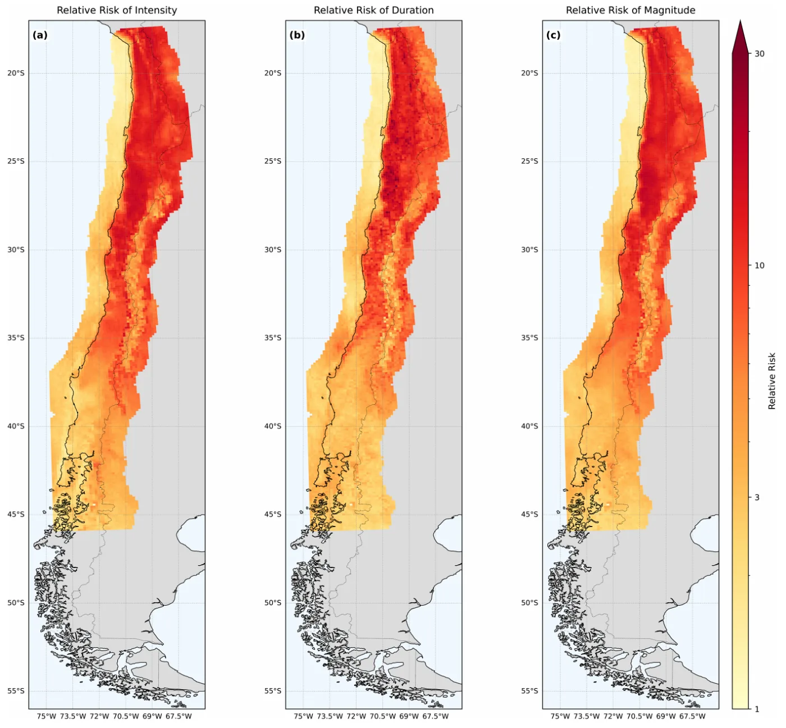

The future of atmospheric heatwaves in Chile projected by a regional climate model
Petit-Laurent, J., Martínez-Villalobos, C., Goubanova, K., Chadwick, C. y Nabat, P. International Journal of Climatology.
Con un modelo climático regional de 12,5 km, el artículo cuantifica cómo cambian la duración, intensidad y magnitud de las olas de calor en Chile. Las más extremas crecen mucho más que las moderadas, sobre todo en el norte y en el valle central.
doi.org/10.1002/joc.70567
Qué hice
Usé el modelo climático regional CNRM-ALADIN (12,5 km de resolución y 91 niveles verticales) para proyectar las olas de calor en Chile durante este siglo, bajo dos escenarios de altas emisiones: SSP5-8.5 como escenario principal y SSP3-7.0 en el material suplementario. Corregí el sesgo de las temperaturas con mapeo cuantílico no sesgado (UQM) contra el producto observacional CR2MET, y analicé además las temporadas cálida y fría en La Serena, Santiago y Concepción.
Cómo cambia Santiago
- La temporada cálida se extiende desde fines de noviembre hasta comienzos de abril hacia 2080, un aumento de 90 %. El período de olas de calor crece 7,8 días por década y cubriría más de seis meses, mientras la temporada fría tiende a desaparecer.
- Entre 2050–2080 y 1980–2010 la frecuencia de olas de calor sube 32 %. Las más largas superan los 50 días, son hasta 3 °C más intensas y su magnitud es 120 % mayor.
- La ola más intensa de cada año sería 18 % más intensa y de 2,8 veces la magnitud. Los eventos que superan el máximo anual histórico ocurrirían de 6 a 8 veces más seguido.
El riesgo en todo el país (Figura 10)
Los mapas muestran cuántas veces más frecuente se vuelve el evento típico anual del clima histórico. Duración y magnitud aumentan más que la intensidad. Hay un punto crítico en el valle central, alrededor de 40,5° S y 34,5° S, con riesgo relativo cercano a 10 en intensidad y superior a 17 en magnitud y duración.
- Las olas de calor de 10 días o más serían unas 54, 21 y 12 veces más frecuentes en Concepción, Santiago y La Serena.
- Olas de calor tan severas como las de las temporadas de incendios de 2012, 2016/17 y 2019 serían de 3 a 6 veces más frecuentes.
Alcance y límites
Es un solo modelo regional forzado por un solo modelo global, así que no recoge toda la incertidumbre: los resultados sirven como prueba de estrés para escenarios de altas emisiones. Con ambos escenarios, la respuesta es casi idéntica cuando se compara con el calentamiento regional.